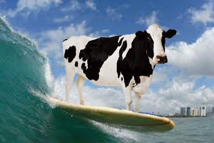

The Nautical Bovine is a grille that specializes in must-have surf and turf. Rated "The Best Fictional Restaurant Worldwide" in 2018, we pride ourselves on our ability to make mouth-watering fresh feasts daily. Due to recent public awareness, we've even had to install a revolving door capable of handling the traffic produced by the assembly line of customers who flow in and out of the bodega like a stream of human sardines. We guarantee freshness, since we had to develop both a slaughter house and a fishing wharf directly next to our facility to supply the biblical flood of consumers looking for our quality meals. Scientists have stated that the overwhelming consumer demand for our delicious entrées will have irrepairable effect on our ocean's eco-system. But we reckon they're charlatans, since they can't use their science to explain why our food is just so finger-lickin'-good!